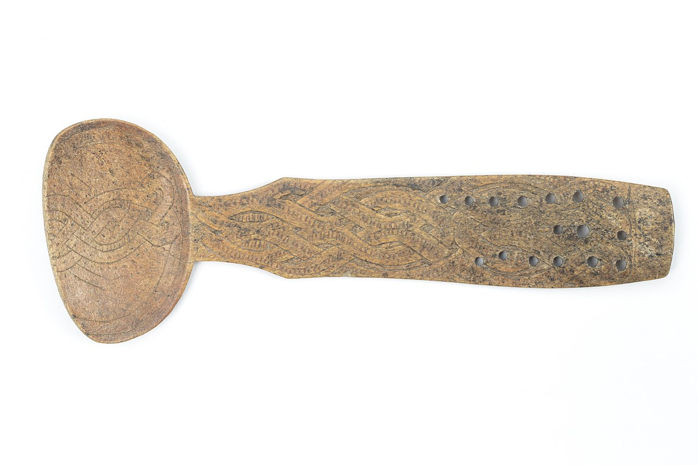
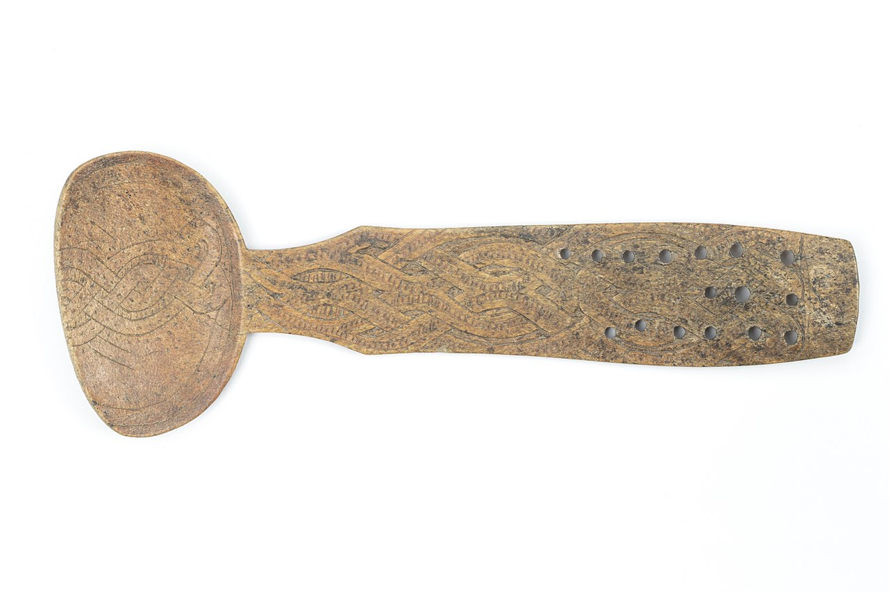

Notice two things, the size of the image along with its alternative text. We can change that through the attributes.

Without specifying the width or height, the web browser will use the original size of the image.
Let us begin with the programmer's classic first general output, Hello World!
Notice how the spacing happened between the last sentence and this one. Remember to think of these as what the
p stands for in this element, a paragraph. So, no matter how many lines we skip in the code,
the web browser will render it as a single continuous paragraph. Instead, we use the break tag,
as such.
Therefore,
although the code would look weird,
all the users would care for is how
it is rendered
at the end.
Now, let us have an image.

Notice two things, the size of the image along with its alternative text. We can change that through the
attributes.
Without specifying the width or height, the web browser will use the original size of the image.
Sometimes we want to have a list represented somewhere in our document, but the kind of list matters to represent some underlying information. Regardless of the type, we use the li element to create a list item. For example, an ordered list could represent steps in completing something:
Lastly, we will cover links, the core foundation of HTML. These can be made with the a element and can link to both pages outside our own domain and within our domain.
We can also have our links open on another tab, whether it will download a file on click, and we can even wrap it around something to make the entire thing a link.